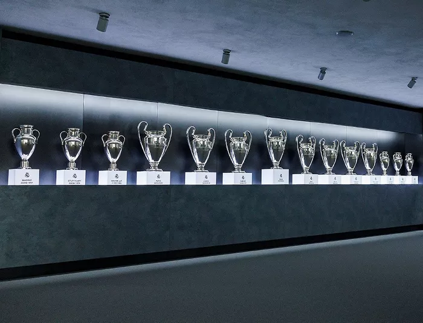
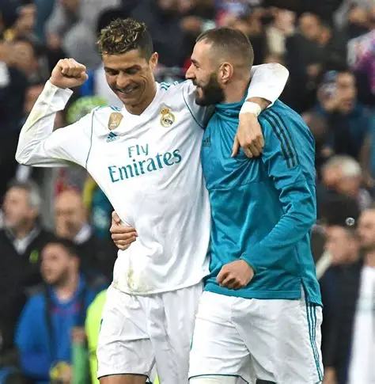

Time com maior quantidade de taças da Champions League
O Real Madrid é reconhecido mundialmente como o maior vencedor da UEFA Champions League. Ao longo de sua história, o clube espanhol construiu uma trajetória marcada por conquistas impressionantes, sendo o time que mais vezes levantou a taça, apelidada de "Orelhuda".
A equipe madrilenha é sinônimo de sucesso na Champions. Jogadores lendários como Alfredo Di Stéfano, Raúl, Cristiano Ronaldo e Karim Benzema, marcaram época e ajudaram a consolidar o clube como o “rei da Europa”.
Com um número de títulos que supera qualquer outro clube, o Real Madrid não apenas domina a estatística, mas também simboliza a grandeza e o espírito da competição mais sonhada pelos clubes do mundo.

Ídolos e Impacto Mundial
Os ídolos do Real Madrid são parte essencial da construção de sua grandeza. Alfredo Di Stéfano foi o responsável por colocar o time no topo da Europa nas décadas de 1950 e 1960, estabelecendo a identidade vencedora que acompanha o clube até hoje.
Décadas depois, Cristiano Ronaldo marcou uma era dourada, sendo o maior artilheiro da história do clube e peça fundamental em quatro títulos de Champions em apenas cinco anos. Sua presença transformou o Real Madrid em um espetáculo global.
Esses ídolos transformaram o Real Madrid em um fenômeno, atraindo milhões de fãs e levando a marca do clube a todos os continentes, reforçando a identidade merengue como sinônimo de excelência.

Estrutura e Tradição do Clube
O Real Madrid é muito mais do que um time: é uma instituição esportiva sólida. Desde sua fundação em 1902, o clube construiu uma identidade marcada pela disciplina, gestão séria e busca constante por excelência.
Um dos símbolos máximos dessa tradição é o Estádio Santiago Bernabéu, um verdadeiro templo do futebol. Em constante modernização, o Bernabéu representa a união entre a rica história do clube e a inovação.
A combinação de estrutura sólida, uma base de fãs global e um compromisso inabalável com a vitória faz do Real Madrid um verdadeiro exemplo, consolidando-o como o maior clube da história do futebol.